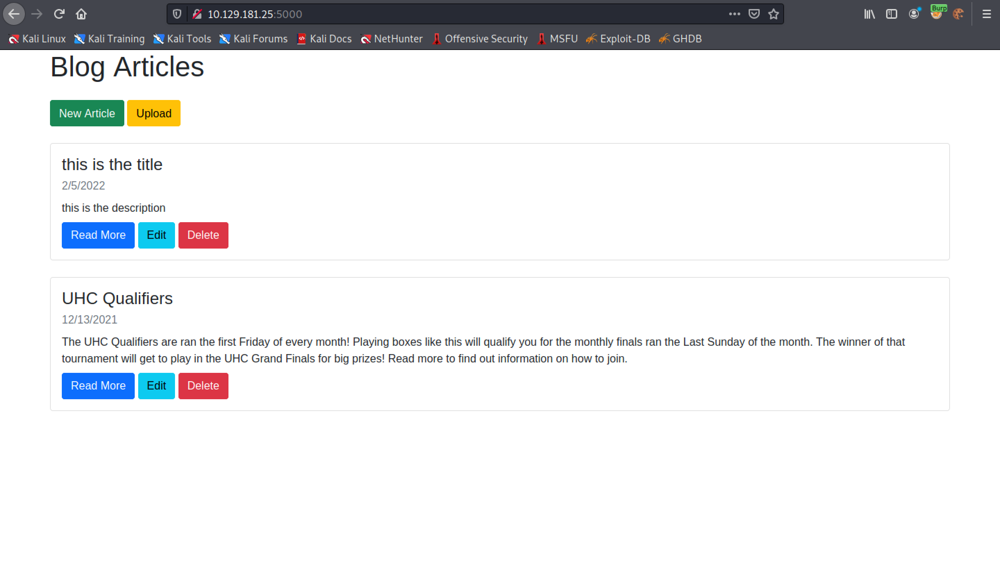

February 24, 2022
Node Cookie Deserialization Command Injection
In this tutorial, we will see how to inject malformed cookie to gain remote code execution on the target. The target is using the "node-serialize" module to deserialize the cookie. This page and this page contains more information about this vulnerability.
The web application is using this piece of code to deserialize the cookie.

This shows the main page of the website. We are logged in to the web application.
This shows the cookie used to access the web page.
Let's refresh the page, capture it in Burp Intercept and right-click on it to send it to Burp Repeater.
Select the cookie and URL-decode it.
This shows the decoded cookie.
We can completely remove the cookie and then replace it with the payload. This works because the source code reveals that the payload will be checked before "user" and "sign". This payload pings our local machine.

Now we have to URL encode the semi-colon.
We can see that the ICMP packets from the target box are received which means code execution is possible and there is communication betweeen the hosts.
This command Base64 encodes our Bash reverse shell.
Let's send the Base64 encoded payload through the Burp Repeater.
We can see that the payload executed successfully and we get a reverse shell.
However, we don't have to replace the cookie completely. We can modify the previous cookie by adding a new field with the payload in it.

We can see that the command executed successfully and we were able to obtain a reverse shell.
Replacing the cookie key "rce" with "0xma" doesn't make a difference. Because it is the payload that gets executed.
Once again, we have been successful in obtaining a reverse shell.

- Escalate a Regular Shell to Meterpreter Shell
- Reading Outlook Files in Terminal
- Escalating Privileges with Metasploit's Local Exploit Suggester
- Simple wget PowerShell Script
- PsExec in Linux
- Eternal Blue Exploitation with Metasploit
- Exploit EternalBlue with Custom Exploit - 1
- Exploit EternalBlue with Custom Exploit - 2
- Local Privilege Escalation on Linux Kernel < 4.4.0-116
- Extract Passwords from Firefox Profile
- Escalate Privileges via pip
- Escalate Privileges by Modifying the /etc/passwd File
- wp_admin_shell_upload
- Extract Passwords with LaZagne
- Bruteforce Windows Server SMB Credentials with Medusa
- Brute Force Windows Server SMB Credentials with Hydra
- Brute Force Windows Server SMB Credentials with NCrack
- Brute Force Windows Server SMB Credentials with CrackMapExec
- Brute Force Windows Server SMB Credentials with Metasploit
- Exploit PrintNightmare